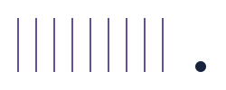

01 / OŚ BINARNA I WERSJE KOLORYSTYCZNE
0 · 1 → dh. Misa „d” przywołuje zero, wspólny pion działa jak jedynka, a jedna krzywa domyka „h”.
02 / PALETA
Cloud#F8F9FC
Midnight#17233D
Lavender#E8E1FA
Blush#F6E2EB
Iris#65509A
03 / TYPOGRAFIA
Manrope
Precyzja myślenia.
Użyteczne rozwiązania.
IBM PLEX MONO
SOFTWARE / AI / RESEARCH
0123456789 · Aa Bb Cc
SOFTWARE / AI / RESEARCH
0123456789 · Aa Bb Cc
Nagłówki 600 · treść 400
Etykiety techniczne 400
04 / GEOMETRIA + MIĘKKIE POLA KOLORU

Pole ochronne: minimum 20% wysokości symbolu.
Logo od 180 px szerokości · symbol od 32 px.
Logo jest jednobarwne; zachowuj proporcje i grubości kresek.
Logo od 180 px szerokości · symbol od 32 px.
Logo jest jednobarwne; zachowuj proporcje i grubości kresek.
Favicon: grubsza wersja micro na granacie.